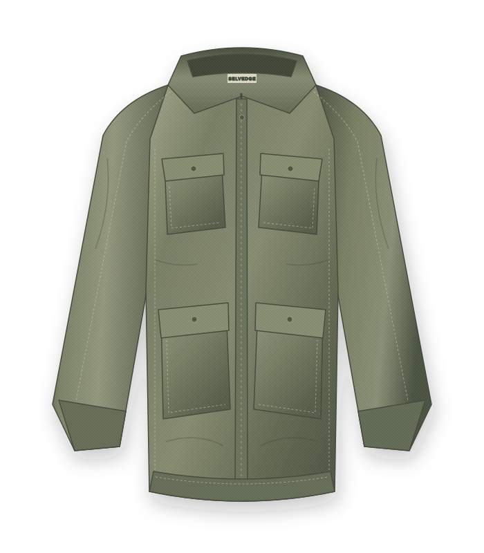

01 / FIELD SERIES
FIELD SERIES / ISSUE 01
Outside
the ordinary.

Made for the space between the city and everything beyond it.
Explore the constructionFIELD SERIES / ISSUE 01

Made for the space between the city and everything beyond it.
Explore the construction02 / CONSTRUCTION
Quiet utility, a generous silhouette and considered proportions. The concept draws its character from the relationship between structure and movement.
03 / FIELD SERIES
An independent fictional garment study. No physical product is offered for sale.
Back to the beginning